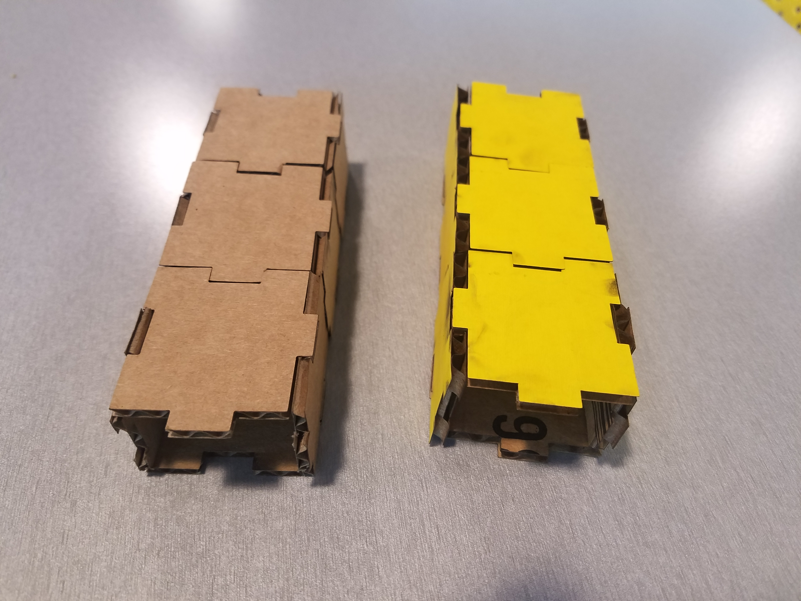
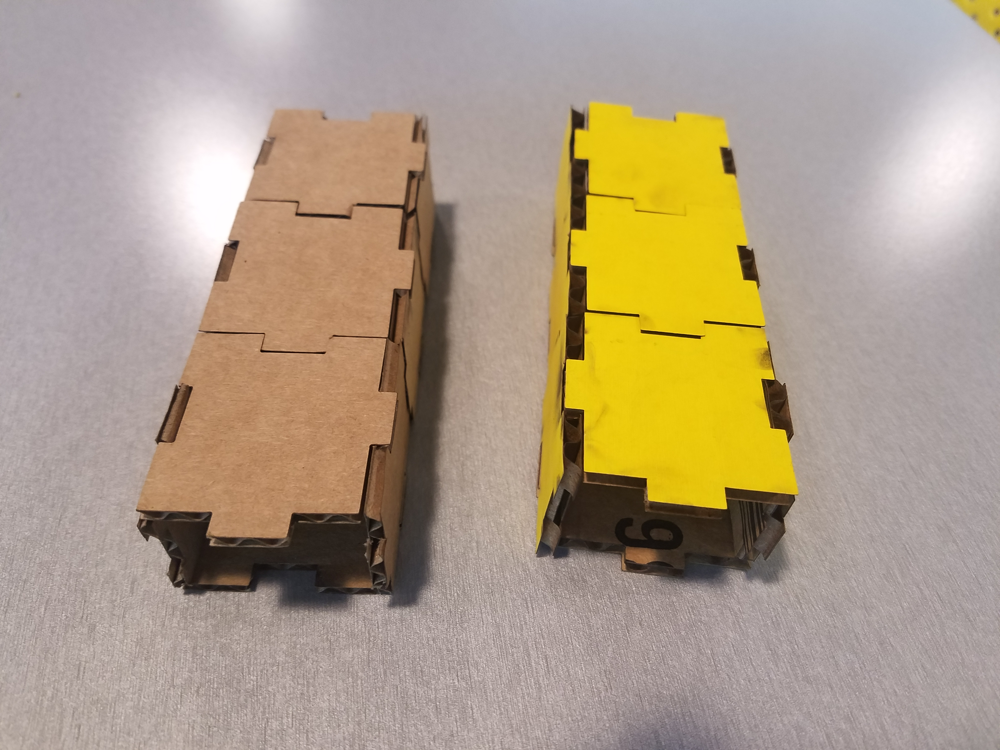
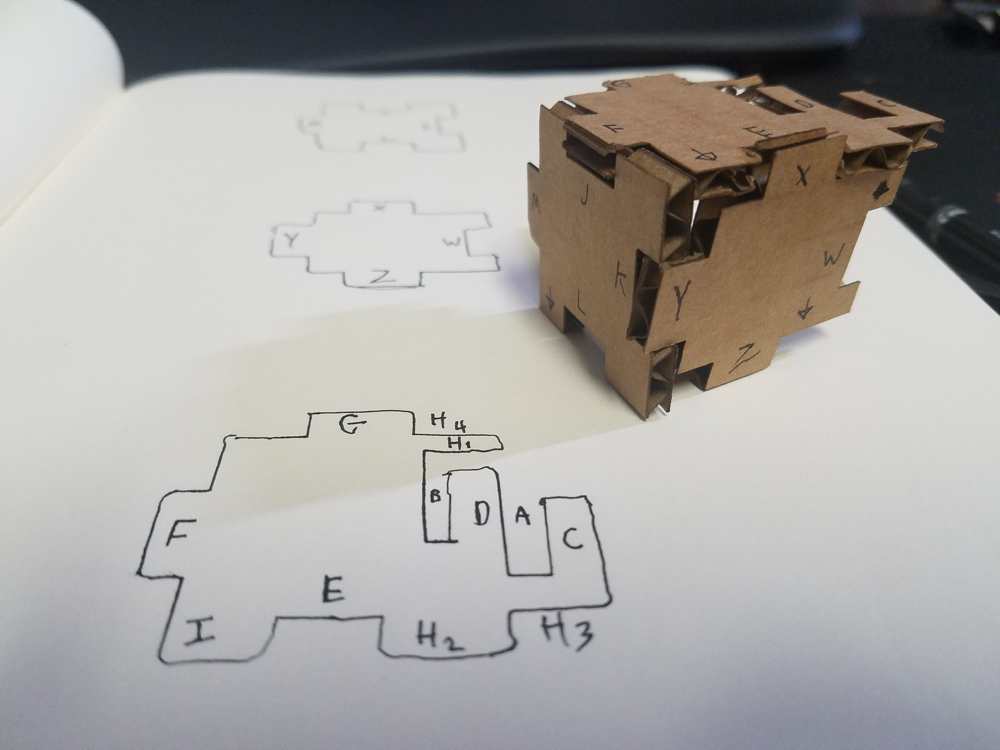

Lukas' Assignment 2: CAD Model Construction Kit & Fabrication!
Overview:
 

Synthesis / Define
Design prompt criteria:Ideation / Develop


Test / Implementation / Deliver
Refining each of the three components and cutting out each of the pieces for a consistent Press Fit was a good learning experience in digital fabrication; more specifically along the engineering method of "Measure Twice, Cut Once"

Problem:
Experienced Law of the instrument or Confirmation biasUsing Solidworks daily for a niche specialization in modeling aerospace tools into orthographic drawings created an internal bias while learning Visual Scripting. Additionally, knowing a more efficient manner to solve the problem in minutes in Solidworks impacted drained my patience while learning.
Confirmation bias is the tendency to search for, interpret, favor, and recall information in a way that confirms one's preexisting beliefs or hypotheses. The concept known as the law of the instrument, otherwise known as the law of the hammer,[1] Maslow's hammer (or gavel), or the golden hammer,[a] is a cognitive bias that involves an over-reliance on a familiar tool.

Solution:
Mentally letting go of my Mechcanical Engineering & Solidworks training so that I could focus on learning how to correctly create a CAD Visual Diagram.For example, when I look at a 2D image to consider it's 3 dimensions I slice it in half and consider how I would get this outcome if I was subtracting the material.
With Visual Diagrams in Grasshopper, one has to approach modeling with the components and math from the ground up.


Reflection
Further exploration could include researching the process to design the pieces to be more flush and compact with one another in the initial stages.
Another learning opportunity for future research would be to explore setting up vector anchor point to mirror one another such that making adjustments to the sketch adjusts the other sketches accordingly to keep the Press Fit intact.
Peer-attribution:
Joshua, Julie Do, Demarcus, and Julie Rose helped teach me Grasshopper best practices.
Bias https://en.wikipedia.org/wiki/Law_of_the_instrumentMachine Settings:

Source files
Click the image below to download the Vector Files